המיתולוגיה סביב המשחק
המיתולוגיה היוונית היא אוסף מיתוסים שנוצרו ביוון העתיקה המתארים את סיפורם של האלים היוונים.
לאחר הקמת האימפריה הרומית ומפלת האימפריה היוונית, אימצו הרומים את המיתולוגיה היוונית עם שינויים קלים ושמות שונים.
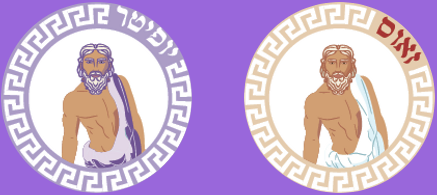
זאוס/יופיטר
אל הרעם והברק, מלך האלים וראש המשפחה
זאוס/יופיטר הוא האל הקטן ביותר מבין האלים ילדיהם של הטיטאנים. בגלל נבואה שאביו קרונוס/סטורנוס קולל בה. הנבואה חזתה שאחד מילדיו יקח את כס מלכותו, ולכן היה בולע את ילדיו לאחר נולדו.
כאשר זאוס נולד אימו רימתה את אביו ונתנה לו אבן במקום תינוק. לאחר שזאוס גדל והתחזק, עבד על אביו לשתות משקה שיגרום לו להקיא את אחיו ואחיותיו. יחדיו הם הביסו את אביהם והשתלטו על כס המלכות, עם זאוס/יופיטר כמלכם וכמלך השמיים.
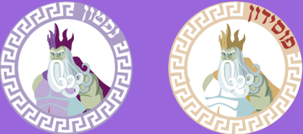
פוסידון/נפטון
אל הים, רעידות האדמה והסוסים
מאחר שהיה אח גדול לזאוס/יופיטר קרונוס/סטורנוס בלע אותו. לאחר שזאוס/יופיטר גרם לאביהם להקיא את ילדיו, פוסידון/נפטון הצטרף למלחמה נגד אביהם. לאחר שניצחו במלחמה, השיג פוסידון/נפטון את ממלכת הים והאוקיינוסים.
אחת היריבויות הגדולות ביותר בין האלים, היא היריבות של פוסידון באתנה. פעם אתנה תפסה את פוסידון עם הנערה היפה מדוזה באחד ממקדשיה, אתנה כעסה ולכן קיללה את מדוזה להיות מפלצת מכוערת עם שיער של נחשים, אשר תאבן אדם שיסתכל עליה.
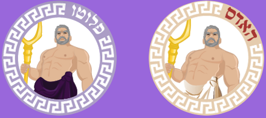
האדס/פלטו
אל ההאדס, אבני החן והמתכות היקרות
מאחר שהיה האח הבכור לזאוס/יופיטר קרונוס/סטורנוס בלע אותו. לאחר שזאוס/יופיטר גרם לאביהם להקיא את ילדיו, האדס/פלוטו הצטרף למלחמה נגד אביהם. לאחר שניצחו במלחמה, השיג האדס/ פלוטו את ממלכת ההאדס השוכנת מתחת לאדמה.
פרספונה/פרוסרפינה היא ביתה של דמטר/קרס. האדס/פלוטו התאהב בה קשות ולכן חטף אותה לממלכתו, דמטר/קרס כעסה מאוד ולכן האדס/פלוטו החזיר אותה אליה אבל לפני כן נתן לה לאכול רימון שגדל בממלכתו המאלץ אותה לשוב לממלכתו שלושה חודשים בשנה.
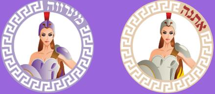
אתנה/מינרווה
אלת החוכמה, האומנות, המדע והקרב.
פטרונית יוון
אתנה/מינרווה נולדה בצורה שונה משאר האלים, שכן היא פרצה מראשו של זאוס/יופיטר בוגרת עם גלימה וקסדת קרב.
אתנה/מינרווה נחשבת לאלת הסריגה. אישה בשם ארכנה התפארה בעצמה כאורגת יותר טובה ממנה. הן עשו תחרות אריגה ולבסוף ארכנה הפסידה, בשל גאוותה הראשונית הפכה אותה אתנה/ מינרווה לעכביש הראשון.
אחת היריבויות הגדולות ביותר בין האלים, היא היריבות של פוסידון באתנה. הם רבו על מי ישמש פטרון לאתונה, פוסידון נתן במתנה מעיין מי מלח לעומת זאת אתנה נתנה את עץ הזית, תושבי אתונה אהבו את מתנתה של אתנה יותר ולכן היא זכתה להיות פטרוניתם.
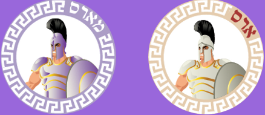
ארס/מארס
אל המלחמה, הקרב והצבא.
פטרון רומא
ארס/מארס הוא בנם הראשון של זאוס והרה ומייצג את ההרגשה של הניצחון במלחמה.
למרות שמעולם לא נישאו ידוע מאוד אהבתו של ארס/מארס לאפרודיטה/ונוס, יחד ייצגו את התחושות איתם אדם הולך למלחמה. מצד ראשון לנצח במלחמה לשם הבסת הצד השני ומצד שני לנצח במלחמה על מנת לשמור על אהובנו בטוחים.
הרומים מאוד העריכו את מארס ולקחו אותו לפטרונם. הם ראו בו שני רק למלך האולימפוס בעצמו.
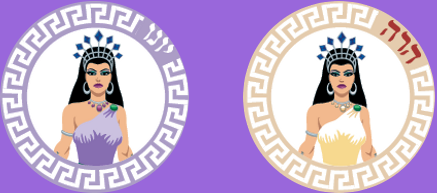
הרה/יונו
אלת הנישואין והאימהות, אשתו של יופיטר
הרה/יונו הפכה למלכת האולימפוס לאחר שקרונוס/סטורנס הובס, וזאוס/יופיטר התחתן איתה. היא מתוארת לרוב כאצילית ונשגבת.
למרות היותה אלת הנישואין, היה בינה לבין הפייסטוס/וולקן מתח תמידי שנוצר בשל כך נכותו של פייסטוס/וולקן והרצון של הרה/יונו לילד מושלם. לכן זרקה אותו מהאולימפוס כשהיה ילד קטן. בתמורה רצה לנקום בה ולכן בנה לה מלכודת ממנה לא יכלה להשתחרר. לאחר שהרגיעו אותו האלים האחרים והבטיחו לו את אפרודיטה/ונוס לאישה שיחרר את אימו.
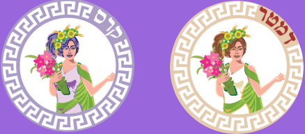
דמטר/קרס
אלת החקלאות, היבול והשפע
לאחר שקרונוס/סטורנס הובס,קיבלה דמטר/קרס את התפקיד של אלת החקלאות
כאשר פרספונה/פרוסרפינה ביתה נחטפה ממנה על ידי האדס/פלוטו בתקופת הסתיו-חורף. דמטר/קרס כעסה ועצבה מאוד ולכן האדמה הפכה עקרה והתחילה בצורת, לאחר תפילותיהם של בני האדם האדס/פלוטו החזיר אותה אליה. בשל מקרה זה יש את עונות השנה המתחלפות לפי תחושת דמטר/קרס.
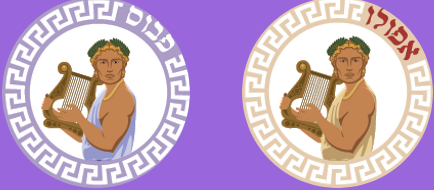
אפולו/פבוס
אלת החקלאות, היבול והשפע
אל השמש, המוזיקה, הרפואה והנבואה
אפולו/פבוס הוא בנם של זאוס/יופיטר והטיטאנית שוחרת השלום לטו. אפולו/פבוס הוא תאומה של האלה ארטמיס/דיאנה.
אפולו היה אל פעיל במלחמת טרויה, הקשר הראשוני שלו למלחמה התחיל מכך שהאלים רצו להוריד את זאוס/יופיטר מהכס, ולכן קשרו אותו אבל לא טוב מספיק כי כאשר התעורר הצליח לברוח מהשלשלאות, הוא כעס מאוד על האלים והעניש את אפולו/פבוס ואת פוסידון/נפטון לבנות בעבדות פרך את חומות טרויה
בנוסף לכך במהלך המלחמה התאהב בנערה בשם קסנדרה אך כאשר לא נענתה לחיזוריו קילל אותה שתהיה נביאת אמת שאיש לא מאמין לה, היא חזתה את נפילת טרויה אבל איש לא האמין לה.
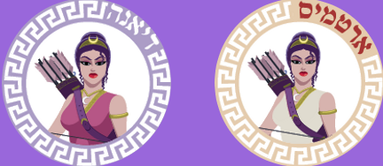
ארטמיס/דיאנה
אלת הירח, הציד והחץ וקשת
ארטמיס/דיאנה היא ביתם של זאוס/יופיטר והטיטאנית שוחרת השלום לטו. אפולו/פבוס הוא תאומה של האלה.
היתה יריבות בין ארטמיס/דיאנה לבין אפרודיטה/ונוס בשל תפיסותיהן. אפרודיטה/ונוס היא אלת האהבה והיופי הנשי בניגוד ארטמיס/דיאנה המתוארת כאלת ציד מקצוע שהיה משוייך לגברים.
היפוליטוס היה חברה של ארטמיס/דיאנה, יום אחד הכעיס את אפרודיטה/ונוס והיא הרגה אותו. בתמורה הרגה ארטמיס/דיאנה את אדוניס, מאהבה של אפרודיטה/ונוס שטען שהוא יורה יותר טוב בחץ וקשת אפילו מארטמיס/דיאנה.

הפייסטוס/וולקן
אל הנפחים, האש והעבודה
הפייסטוס/וולקן היה בנם של זאוס/יופיטר והרה/יונו, הוא האל היחיד שנולד נכה ולכן אימו השליכה אותו מהאולימפוס.
למזלו מצאה אותה תטיס, היא ריפאה את פצעיו וגידלה אותו כבנה. לאחר שגדל שלחה אותו למשפחת קיקלופים שלימדה אותו איך לעבוד את עבודת הנפחות והידיים. יום אחד ביקר אותו זאוס/יופיטר בסדנה שלו והתפעל מיצירותיו, הוא ביקש ממנו לעשות לו כיסא מלכות והפייסטוס/וולקן נענה. ותוך כדאי הכין מלכודת לאימו שבשביל לחלצה אפרודיטה/ונוס היתה צריכה להינשא לו. אבל בסופו של דבר גילה שהיא וארס/מארס יוצאים. לכן תכנן מלכודת להם ועשה מהם צחוק לכל האלים לראותם.
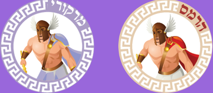
הרמס/מרקורי
אל הגנבים, הסופרים והנוודים.
שליח האלים
הרמס/מרקורי היה בנם של זאוס/יופיטר ומאיה.
כאשר היה קטן בנה את הלירה הראשונה, בתמורה ללירה הסכים אפולו/פבוס להפוך אותו לאל. בשל פקחותו של הרמס/מרקורי השביע אותו אפולו/פבוס אמונים ונתן לו את הקדוקאוס-מטה בעל שני ראשי נחשים.
כאשר זאוס/יופיטר היה עם אישה בשם איו הרה/יונו גילתה על כך והגיעה לשם. מהר זאוס/יופיטר הפך אותה לפרה כדי שלא תגלה, הרה/יונו לקחה לעצמה את הפרה ושמה לשומר עליה את ארגוס בעל 100 העיניים. זאוס/יופיטר נעזר בהרמס/מרקורי להרדים את ארגוס והצליח להחזיר את איו לעצמה.
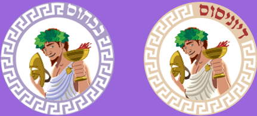
דיוניסוס/בכחוס
אל היין, התיאטרון והפריון
דיוניסוס/בכחוס היה בנם של זאוס/יופיטר וסמלה, נערה בת תמותה.
דיוניסוס/בכחוס נדד בארצות רבות, בכל מקום בו הוא עבר לימד את תושבי המקום את נטיעת הגפנים ואת ייצור היין.
המלך מידאס עזר לדיוניסוס/בכחוס ובתמורה הוא קיבל משאלה. מידאס ביקש שכל דבר אשר יגע בו יהפך זהב. אבל כאשר נגע בביתו הפכה היא לזהב, לאחר שהתחנן בפני דיוניסוס/בכחוס הוא אמר לו ללכת לנהר וכאשר נגע במים נשטף ממנו מגע הזהב.
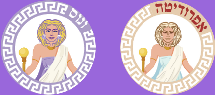
אפרודיטה/ונוס
אלת היופי והאהבה
אפרודיטה/ונוס נולדה בצורה שונה מרוב משאר האלים, לאחר שהטיטאן קרונוס/סטורנוס הרג את אביו והשתלט על ממלכתו, דמו של אביו נפל למים ויצר קצף ים ממנו נוצרה האלה אפרודיטה/ונוס.
על פאריס נסיך טרויה נפלה משימה, היה עליו לתת לאחת מהאלות תפוח מוזהב, כל אחת הציעה דבר שרצה אבל אפרודיטה/ונוס הציעה לו את האישה היפה בעולם-הלנה.
לכן פאריס חטף את הלנה כפי שהבטיחה לו אפרודיטה/ונוס. פעולה לגרמה לפרוץ מלחמת טרויה.
במשחק לאפרודיטה ולונוס יכולות מיוחדות!
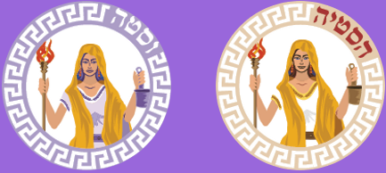
הסטיה/וסטה
אלת האש החום והאח
הסטיה/וסטה היא האחות הבכורה של זאוס/יופיטר, והילדה הראשונה שאביהם בלע, לאחר ניצחון האלים במלחמה הפכה לאלת האש, החום והאח המשפחתית. היא קיבלה להיות אחת מ-12 האלים האולימפים, שנחשבים לאלים החשובים והחזקים ביותר בתרבות היוונית והרומית. אבל כאשר דיוניסוס/בכחוס הפך לאל ויתרה על מקומה במועצה בשביל לשמור על השלום בקרב האלים.
במשחק להסטיה ולוסטה יכולות מיוחדות!

קרונוס/סטורנוס
מלך הטיטאנים, אדון הזמן והקציר
קרונוס/סטורנוס היה הבן הקטן ביותר במשפחת הטיטאנים. אביו התנהג כדיקטטור בשל נבואה שניבאה שבנו יקח ממנו את שלטונו. כאשר הגיע ההזדמנות קרונוס/סטורנוס תפס פיקוד והרג את אביו בעזרת חרמש שאימו נתנה לו. אך עד מהרה אותה נבואה רבצה גם עליו ולכן הוא החליט שיאכל את ילדיו חיים. אבל אישתו ריאה לא הסכימה לכך ולכן במקום בנו זאוס/יופיטר נתנה לו אבן. כאשר זאוס/יופיטר גדל הוא שחרר את אחיו ואחיותיו והביס את אביו.
אבל קרונוס/סטורנוס כועס על כך שלקחו לו את כיסה מלכותו ולכן ברובון הוא מצטרף לצד השני של המלחמה כדי לנקום באלים.
במשחק לקרונוס ולסטורנוס יכולות מיוחדות!